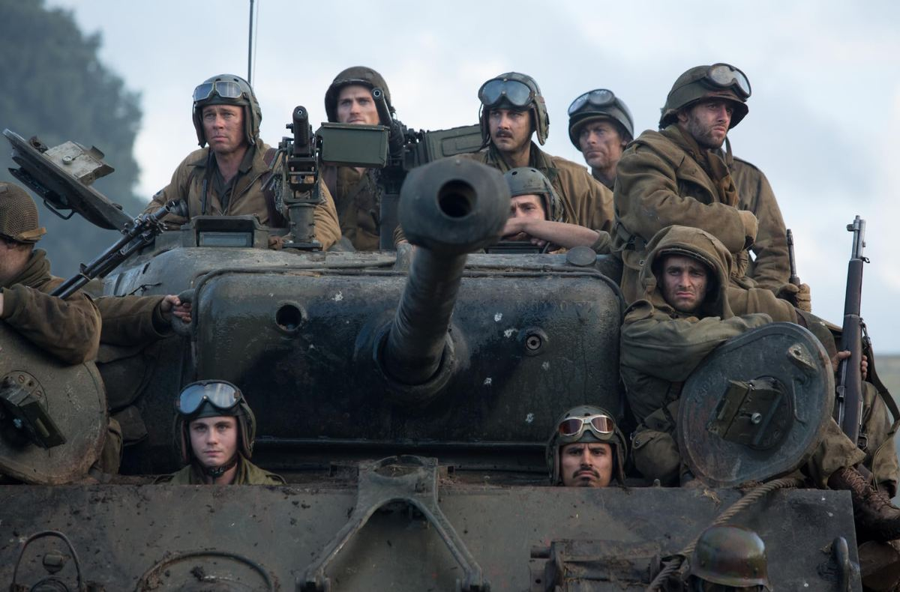
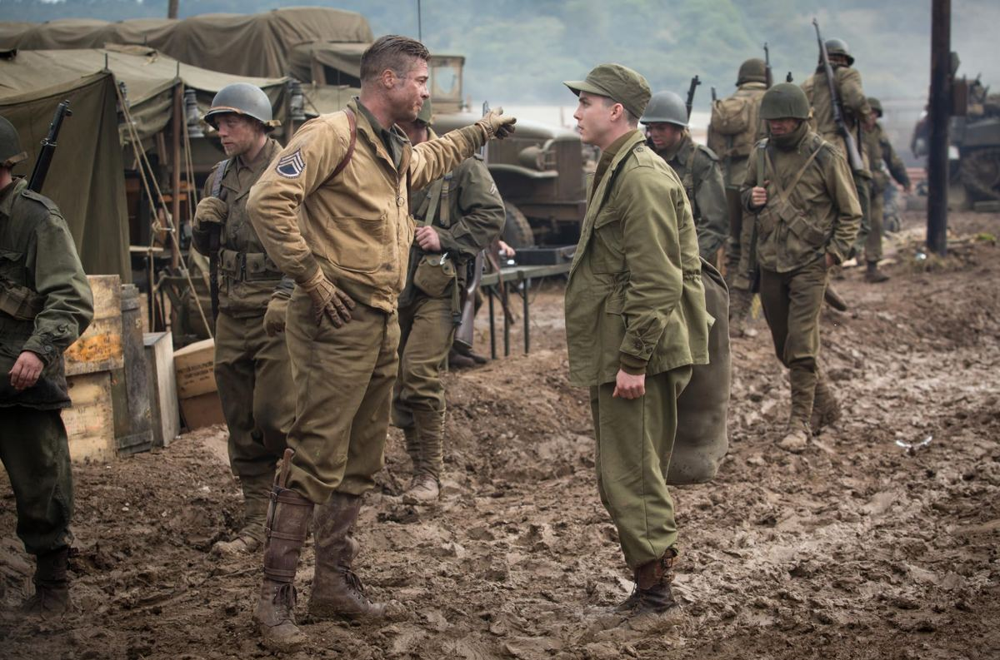
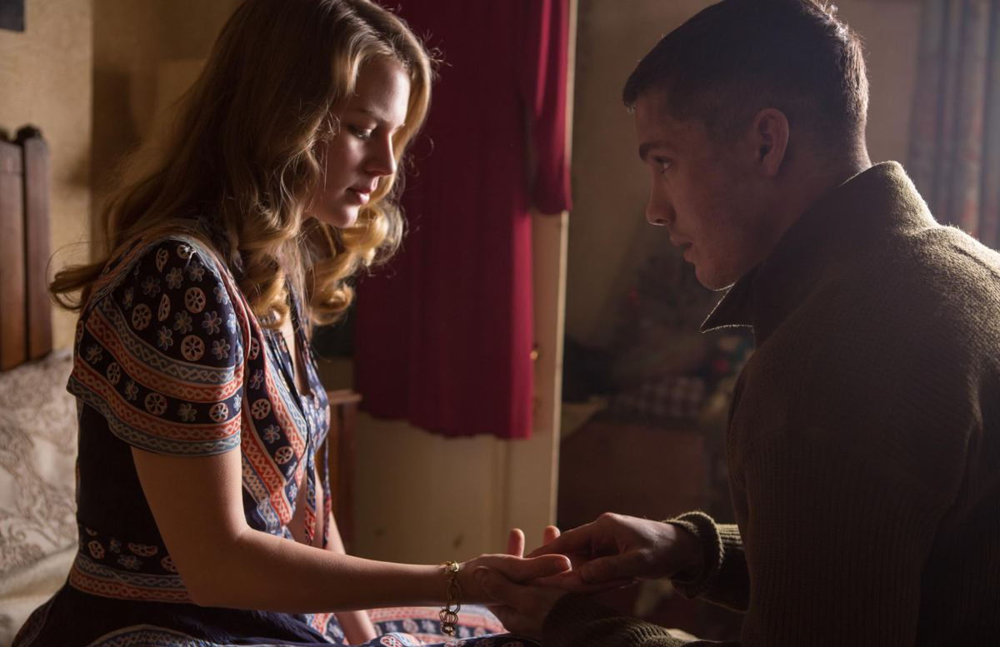
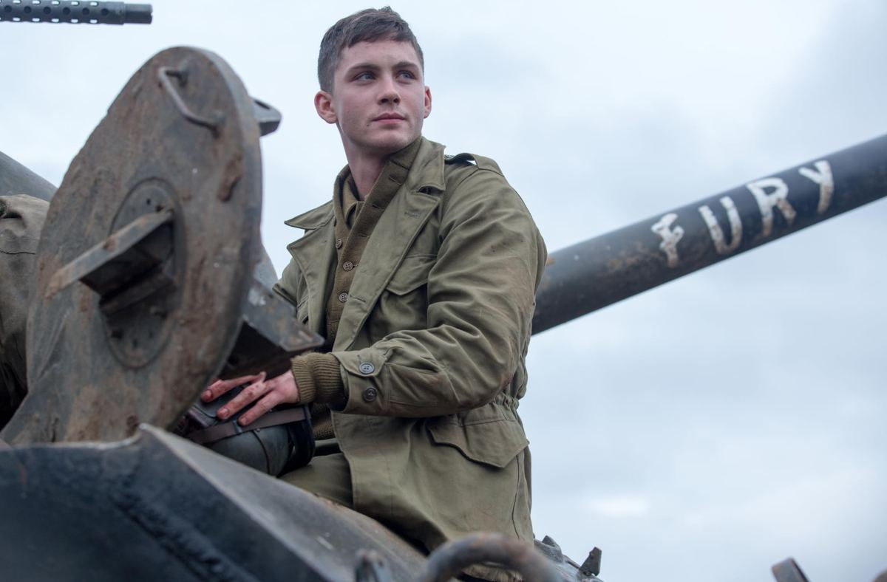
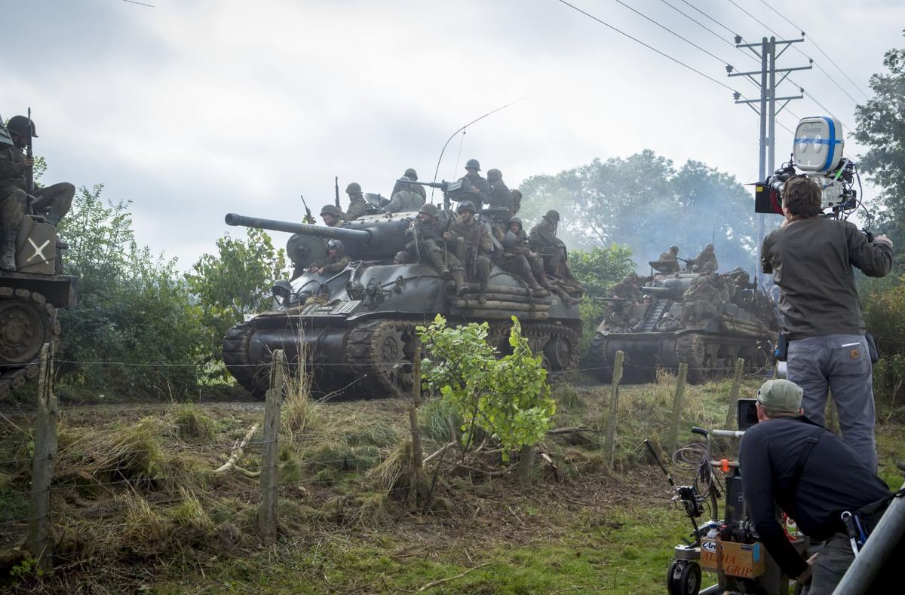

「我干过最好的工作」Best job I ever had
1945年4月，欧洲战场只剩下几周。所有人都知道结局，包括德国人自己。就在这个时候，一辆叫「狂怒」的 M4A3E8 谢尔曼坦克还在往德国腹地开。
April 1945. Europe has weeks left to run and everybody knows it, the Germans included. And an M4A3E8 Sherman named Fury is still driving deeper into Germany.
车长是唐·科利尔中士，绰号 战争老爹（Wardaddy）。全片被重复最多的一句台词，是他嘴里的五个词：Best job I ever had——我干过最好的工作。
Its commander is Staff Sergeant Don “Wardaddy” Collier. The single most repeated line in the film is five words out of his mouth: “Best job I ever had.”
第一次听到，它像反讽。他的「工作」是钻进一个铁盒子：柴油、汗、火药和血的味道混在一起，上一个副驾驶的半张脸还留在他脚边的钢板上，他得亲手把它擦掉。这份工作一点都不好。
The first time you hear it, it lands as irony. His “job” is a steel box that smells of diesel, sweat, cordite and blood; part of the last assistant driver’s face is still on the plating by his boot, and he has to wipe it off himself. Nothing about the job is good.
但每打完一仗，全车人会轮流把这句话说一遍。它慢慢变成了别的东西——不是对工作条件的评价，而是一种把自己按回岗位上的方法。它真正的意思是：我认这个位置。
Yet after every action the crew passes the line around like a canteen. It stops being a verdict on working conditions and becomes something else — a way of pressing yourself back into your seat. What it actually means is: I accept this position.
皮特这场表演最厉害的地方，是他从不演「燃」。他把科利尔演成一个长期在岗的人：疲惫、精算、说话短、几乎不解释；只有在没人看见的时候，他会背过身去发抖一下，然后转回来，继续下命令。这不是英雄气概，这是职业耐力。一个把「撑住」当成日常技术活的人，长什么样——他演出来了。
The best thing about Pitt’s performance is that he never plays the swell of it. He plays Collier as a man long on the job: tired, calculating, short-spoken, allergic to explanation. Only when nobody is watching does he turn away and shake for a second before turning back and issuing the next order. That is not heroism. That is occupational endurance — what it looks like when holding on has become a daily technical skill.
「理想是和平的。历史是暴力的。」 “Ideals are peaceful. History is violent.”唐·科利尔（战争老爹）· 《狂怒》(2014) Don “Wardaddy” Collier · Fury (2014)
五个人，一辆坦克：岗位不是身份Five men, one tank: a station is not an identity
谢尔曼是一台需要五个人同时工作的机器。少一个人，整台机器的战斗力不是掉五分之一，而是掉到零。《狂怒》几乎所有的戏剧张力都建在这个结构上：这是一个没有替补席的团队。
A Sherman is a machine that needs five people working at once. Lose one and the machine does not lose a fifth of its fighting power — it goes to zero. Almost all of the film’s tension is built on that fact: this is a team with no bench.

值得注意的是科利尔怎么分配位置。他不问「你想干什么」，他问「这台机器现在缺什么」。诺曼·埃里森是个每分钟能打六十字的文书兵，被塞进坦克当副驾驶——荒谬，但战场就是这么配人的。岗位是机器的需要，不是你的自我介绍。
Notice how Collier assigns seats. He never asks what you want to do; he asks what the machine is missing. Norman Ellison is a clerk-typist who does sixty words a minute, and he gets dropped into a tank as bow gunner — absurd, and exactly how war staffs people. A station is what the machine needs, not your self-introduction.
这一点对今天的求职者刺耳，但有用。很多人的职业焦虑，本质是把「我是谁」和「我此刻坐在哪个位置」焊死了：一旦岗位不体面、不对口、不是当初想要的，人就整个塌掉。科利尔的做法相反——他把身份挂在能不能让这台机器继续开上，而不是挂在职位名称上。这不是让你认命，是让你在位置很烂的那几年里，仍然保留一个可以变强的支点。
That is a harsh note for anyone job-hunting today, and a useful one. A lot of career anxiety comes from welding “who I am” to “where I happen to be sitting”: the moment the role is unglamorous, off-track, or not the one you wanted, the whole person caves in. Collier does the opposite. He hangs identity on whether the machine keeps moving, not on a job title. That is not resignation — it is how you keep a foothold for getting better during the years when the seat is bad.
诺曼的五天：教育交付不了的那部分Norman’s five days: the part school cannot deliver
《狂怒》名义上是皮特的电影，实际上是诺曼的成长故事，而皮特演的是那个把成长强行灌进去的人。这条线之所以让人不适，正因为它诚实：新人不是被教会的，是被放到真实责任里逼出来的。
Fury is nominally Pitt’s film; structurally it is Norman’s coming-of-age, and Pitt plays the man force-feeding that education. The thread is uncomfortable because it is honest: a novice is not taught into competence, he is pushed into real responsibility until it appears.

-
01
报到Reporting in
八周兵龄，专业是打字。他连坦克的门都不知道从哪儿开。派他来的人不在乎，因为战线不等他。
Eight weeks in uniform, trained to type. He does not know which hatch is his. The people who assigned him do not care, because the front does not wait.
-
02
第一次拒绝The first refusal
他不肯开枪。代价立刻具体化：整车人的命被挂在他的犹豫上。电影没给他「慢慢适应」的时间——现实里往往也没有。
He will not fire. The cost is instantly concrete: four other lives hang on his hesitation. The film gives him no ramp-up period, and reality often doesn’t either.
-
03
被按着开的第一枪The first shot, forced
科利尔押着他处决一名德军战俘。这是全片最不舒服的一场戏，也是本文必须说清楚的一点：这个教法是错的。它有效，但它把一个人的道德底线当成训练消耗品。
Collier forces his hand onto the trigger over a German prisoner. It is the film’s most repellent scene, and the honest reading has to say so plainly: the method is wrong. It works, and it spends a man’s moral floor as training material.
-
04
那顿早餐The breakfast
在一间德国公寓里，诺曼短暂地做回了人：钢琴、鸡蛋、艾玛。然后一发炮弹把它拿走。电影用最直白的方式说明：战场不允许你保留一份并行的正常生活。
In a German apartment Norman is briefly a person again: a piano, eggs, Emma. Then a shell takes it away. The film’s bluntest statement — the front does not let you keep a parallel normal life running.
-
05
路口，他自己选择留下At the crossroads, he chooses to stay
最后一战前，没人再逼他。他自己爬回车里。科利尔给了他一个绰号：「机器」。这个绰号既是承认，也是讣告。
Before the last fight nobody makes him. He climbs back in himself, and Collier gives him a nickname: “Machine.” The name is both a promotion and an obituary.

把这条线放回今天，它对应的是一个非常具体的问题：学校交付的是「理想」，工作现场交付的是「历史」。课程是完整的、评分是可预期的、题目有标准答案；而现场是信息不全的、目标会变的、没有参考答案的。诺曼会打字、会算，这些能力并不假，只是坐标系换了。
Transposed to now, that arc points at something concrete: school delivers the ideal; the job delivers the history. A syllabus is complete, grading is predictable, questions have answers. A workplace is under-informed, its goals move, and nothing has an answer key. Norman can type and calculate; those skills are not fake. The coordinate system changed.
所以「毕业即失业」这个说法，一半是真的、一半是误诊。真的部分是：教育本来就不负责交付现场，它交付的是坐标系和学习速度。误诊的部分是：把「我还没被现场训练过」当成「我不行」。诺曼在坦克里五天学到的东西，训练营八周教不了——不是训练营差，是那些东西只能在有真实后果的地方长出来。
Which makes “graduate straight into unemployment” half true and half a misdiagnosis. True: education is not responsible for delivering the field. It delivers a coordinate system and a learning rate. Misdiagnosed: treating “I have not been trained by the field yet” as “I am not capable.” What Norman learns in five days inside the tank, eight weeks of basic could not teach — not because basic is bad, but because those things only grow where consequences are real.
对今天的人，这意味着一件实际的事：尽早找到有真实后果的位置——真项目、开源仓库、有人会验收的实习、会被客户骂的活。而对带人的人，科利尔留下的是一个反面警示：把新人放进真实责任是对的，用羞辱和越界当教具是错的。这两件事可以分开做，电影没分开，我们可以。
For anyone starting out, the practical version is: get to a position with real consequences early — a real project, an open-source repo, an internship where someone signs off on your work, a job where a customer can shout at you. For anyone leading juniors, Collier is a warning label: putting a novice into real responsibility is right; using humiliation and coercion as the teaching aid is wrong. Those two can be separated. The film doesn’t. We can.
十字路口：坚持不等于殉道The crossroads: persistence is not martyrdom
影片最后，一颗地雷把「狂怒」瘫在一个十字路口上，一个党卫军营正沿路开来。科利尔做了那个决定：不走，守住路口。其他人一个个选择留下，然后一个个死掉。
In the last act a mine strands Fury at a crossroads with an SS battalion coming up the road. Collier makes the call: stay and hold it. One by one the others choose to stay too, and one by one they are killed.
这里必须小心。把这场戏读成「坚持就会有好结果」是彻底的误读——他们全死了。也不能读成「所以坚持没用」。科利尔守的不是这辆坦克，是那个路口：一条被卡住的补给线，后方一个野战医院。他坚持的对象是一个具体的、可辩护的理由，不是他自己的执念。
Careful here. Reading the scene as “hold on and it works out” is flatly wrong — they all die. Reading it as “so persistence is pointless” is no better. Collier is not holding the tank, he is holding the junction: a supply road, and a field hospital behind it. What he persists for is a specific, defensible reason rather than his own attachment.
这是把「坚持到底」翻译成现代生活时最容易丢的一步。今天鼓励人硬撑的话术非常多，但很少有人先问：你守的是什么？下面这张表是我从这场戏里拆出来的判断结构——两个问题，四种处境。
This is the step most often dropped when “never give up” gets translated into modern life. There is no shortage of encouragement to endure, and very little asking of the prior question: what exactly are you holding? The grid below is that scene’s decision structure — two questions, four situations.
守住路口Hold the crossroads
这是唯一真正值得「坚持到底」的一格。慢没关系，难没关系——只要能力线还在往上，身体和关系还没被抵押掉。
The only square where “see it through” is genuinely the answer. Slow is fine, hard is fine — as long as the skill curve still climbs and you have not mortgaged your body or your people.
换阵地，别换方向Change ground, not bearing
换公司、换城市、换节奏，但别把手艺一起扔掉。多数「我转行失败了」的故事，其实是在这一格里做了整体放弃。
Change employer, city, tempo — do not throw the craft out with them. Most “my career change failed” stories are a wholesale surrender made from this square.
温水The warm bath
最危险的一格，因为它不疼。稳定、体面、无损耗，但三年后你的能力和三年前一样。它不会逼你走，所以你得自己设期限。
The most dangerous square, because it does not hurt. Stable, respectable, low-attrition — and in three years you are exactly as capable as you are now. Nothing here will force your hand, so you have to set the clock yourself.
从底舱爬出去Out through the escape hatch
科利尔让诺曼从车底逃生口爬出去的那一格。留下不产生任何价值，只产生损耗。撤退在这里不是失败，是唯一正确的战术动作。
The square where Collier tells Norman to go out through the belly hatch. Staying produces no value, only damage. Withdrawal here is not failure; it is the only correct tactical move.
注意最后一格。电影里唯一活下来的人是诺曼，因为科利尔在最后一刻把他从底舱逃生口推了出去。这是全片对「坚持」最完整的定义：真正的坚持里，总有一部分是替别人留出来的出口。一个只知道全员殉葬的车长，不是好车长。
Note that last square. The one survivor is Norman, because at the end Collier pushes him out through the belly hatch. That is the film’s complete definition of persistence: real persistence always reserves an exit for somebody else. A commander who only knows how to take everyone down with him is not a good commander.
梦想：不是终点，是你愿意反复回到的位置Dreams: not a destination, but the seat you keep returning to
科利尔从头到尾只说过一个愿望，而且说得很小：把我的人活着带回家。他没做到。五个人死了四个。
Collier states exactly one wish in the whole film, and states it small: get my men home alive. He fails. Four of the five die.
但这个愿望有一个结构上的好处：它不是一个终点，它是一个每天都能重新执行一次的方向。今天很多人的梦想是写成终点的——「我要成为X」「我要三十岁前实现Y」。终点式的梦想很脆：一旦时间表错位、行业下行、一次裁员，它就整个作废，连带着把人一起作废。
But that wish has a structural advantage: it is not an endpoint, it is a bearing you can re-execute every single day. Most modern ambitions are written as endpoints — “I will become X,” “I will have achieved Y by thirty.” Endpoint ambitions are brittle: one slipped timeline, one industry downturn, one layoff and the whole thing is void, and it voids the person with it.

位置式的梦想结实得多。「我愿意长期待在哪一类问题旁边」——这个句式扛得住失业、扛得住转行、扛得住行业周期，因为它不依赖某一家公司、某一个头衔在特定年份还存在。科利尔的坦克换过、车组换过、战线换过，位置没换。
Bearing-shaped ambitions are far more robust. “What kind of problem am I willing to sit next to for a long time” survives unemployment, survives a career change, survives the cycle, because it does not depend on a particular company or a particular title still existing in a particular year. Collier changed tanks, changed crew, changed fronts. The seat stayed the same.
而这恰恰解释了那句「我干过最好的工作」为什么不是反讽。它不是在说这份工作好，它是在说：我知道我为什么坐在这里。能说出这句话的人，在被裁、被降级、被安排到一个烂项目上的时候，不会整个塌掉。
Which is finally why “best job I ever had” is not ironic. It is not a claim about the job. It is a claim about the man: I know why I am in this seat. A person who can say that does not cave in when they are laid off, demoted, or parked on a bad project.
「我干过最好的工作。」 “Best job I ever had.”全片重复最多的一句话 · 由车长起头，全车轮流复述 The film’s most repeated line · started by the commander, passed around the crew
路口 · 一辆瘫掉的谢尔曼 · 车长仍在炮塔上 · 原创绘制
The crossroads · one dead Sherman · the commander still in the cupola · original drawing
评价Verdict
《狂怒》不是一部完美的电影。它的德军在最后一战里薄得像靶子，那场公寓戏拖得太长，个别道德困境被处理得比它应得的更省事。但皮特这个角色立住了，而且是靠减法立住的——没有慷慨陈词，没有觉醒时刻，只有一个人在一个越来越不可能的位置上，一天一天地继续上岗。
Fury is not a perfect film. Its Germans thin out into targets in the last fight, the apartment sequence runs long, and one or two moral problems get resolved more cheaply than they deserve. But Pitt’s character holds, and holds by subtraction — no speech, no awakening, just a man reporting for duty one more day in an increasingly impossible position.
值得从这部电影里带走的不是「坚持就会赢」。带走这句：先弄清楚你守的是哪个路口，再决定要不要留下；决定留下之后，别忘了给身边的人留一个逃生口。就业、教育、梦想，三件事在这句话里是同一件事。
What is worth taking from it is not “persistence wins.” Take this instead: work out which crossroads you are actually holding before you decide to stay — and once you have decided, leave somebody an escape hatch. Work, education and ambition are one subject inside that sentence.
关于配图
About the artwork

海报与剧照版权归 © 2014 Columbia Pictures / Sony Pictures Entertainment 所有，在此仅作影评引用。坦克剪影、车组编制图、四象限判断表以及页面颗粒质感是为这篇文章原创绘制的（SVG / Canvas）。官方物料见下方链接。
Poster and stills are © 2014 Columbia Pictures / Sony Pictures Entertainment, reproduced here for criticism and comment. The tank silhouette, crew diagram, four-quadrant grid and the page’s film grain were drawn for this piece (SVG / Canvas). Official materials are linked below.
— 全文完 · FURY · 1945End · FURY · 1945 —